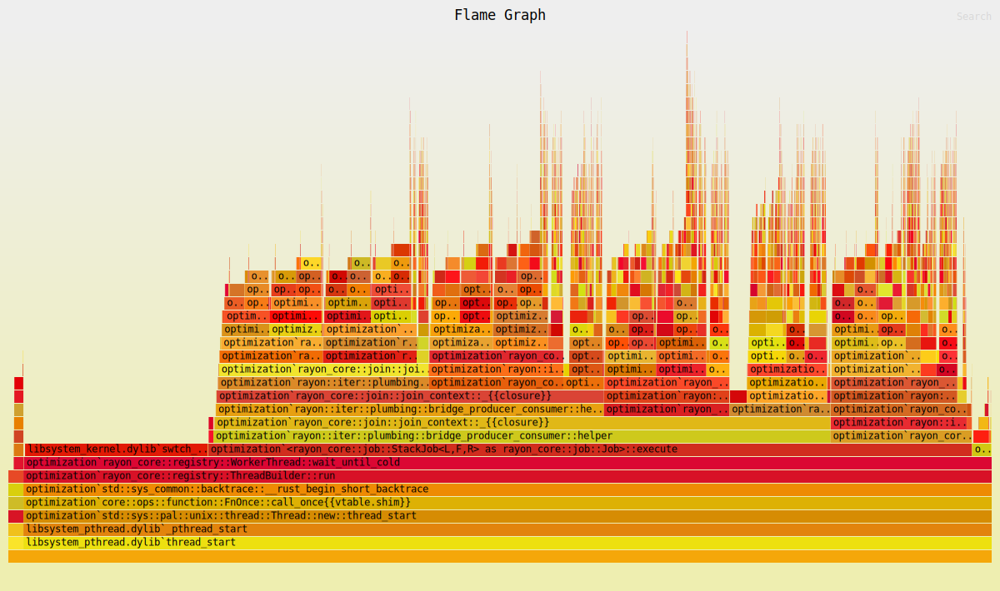
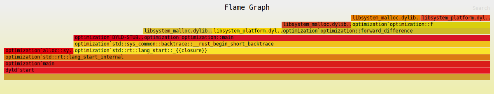
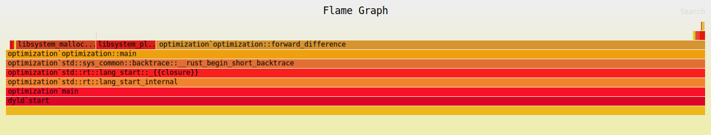

Orders of magnitude faster, but probably not reccomended (yet)
Published
July 29, 2024

A sneak preview of what to expect.
I don’t think this is really reccomended. Python is a lot more established for scientific programming. As a researcher you want to quickly prototype a method, or approach to solving a problem. Rust does not let you do this. The only reason I’ve done the following is because:
I have implemented similar algorithms in almost every language I have ever learned.
It is a means to an end, to learn Rust’s type and memory management system.
And with that, we begin…
I’ll first start with the very basics, defining the function to be optimized, one of the best functions of all time…the Rosenbrock function.
In Python this would be written as follows:
def f(x):returnsum(100* (x[i+1] - x[i]**2)\**2+ (1- x[i])**2for i inrange(len(x) -1))
In Rust we need to define types for what goes in and out of the function to make sure the compiler can perform type checking and ensure memory safety at compile time.
We set the output value to be a mutable float, which we add to. In Rust we omit the semicolon on the last line, allowing sum to be implicitly returned as the function’s output.
fn f(x:Vec<f64>) ->f64{letmut sum =0.0;for i in0..x.len() -1{ sum +=100.0* (x[i +1] - x[i].powi(2)).powi(2) + (1.0- x[i]).powi(2);} sum}
Now I’ll define an initial solution and evaluate this, printing the output of the function. This is simple enough we just need to ensure that our initial solution has the right type.
We’ll make x mutable because we only care about its current state during optimization, not its history. This allows us to modify it in-place, potentially saving memory and computational overhead.
vec! is a macro that creates a new vector with specified values without having to push each element individually.
A key aspect that we’ll need is a basic gradient calculation. For now I’ll implement the forward-difference method. Though this could be the central difference, backward-difference, etc…
fn forward_difference(f:fn(Vec<f64>) ->f64,x:Vec<f64>) ->Vec<f64>{let h =1e-8;// pertubation// initialise mutable gradient vector with zerosletmut grad =vec![0.0; x.len()];// evaluate function let f_x = f(x.clone());for i in0..x.len() {// define a new solution vectorletmut x_forward = x.clone();// perturb x_forward[i] += h;// calculate gradient in this direction grad[i] = (f(x_forward)-f_x)/h;} grad // return grad }
This takes a vector of floats and returns another vector of floats (the jacobian). We use x.clone() for the initial function evaluation because Rust’s ownership rules would otherwise move x into the function f, making it unavailable for subsequent use in the loop.
Now I am going to implement a backtracking linesearch to calculate the optimal step-size at each gradient step. We need to define a few constants.
fn line_search(f:fn(Vec<f64>) ->f64, x:Vec<f64>, grad:Vec<f64>) ->f64{// linesearch constantsconst TAU:f64=0.5;const C:f64=0.5;// initialize maximum stepsizeletmut a_j:f64=0.001;// calculate gradient dot productlet m:f64= grad.iter().map(|&grad_i| grad_i*grad_i).sum();let t =- C * m;let f_x = f(x.clone());// until condition...loop{// create an incremented x along gradientlet x_inc:Vec<f64>= x.iter().zip(grad.iter()).map(|(&x_i,&grad_i)| x_i - a_j * grad_i).collect();// if a sufficient descent...if f(x_inc) <= f_x - a_j * t {return a_j;}// else make the stepsize smaller a_j *= TAU;if a_j <1e-10{// Prevent infinite loopreturn a_j;}}}
There’s a fair bit going on here. Firstly, constants are defined using capital letters alongside their type annotation.
The dot product is calculated by iterating over elements within grad. We first map over all elements and multiply them by themselves. Then we sum the resulting vector.
grad.iter().map(|&grad_i| grad_i*grad_i).sum()
To iterate over multiple vectors at the same time we can zip them together as follows:
x.iter().zip(grad.iter())...
Finally, when we increment x along the gradient direction, we use .collect(), this converts the iterator which is returned from .map back into a Vec<f64>.
Now all that’s left is to put it all together, we’ll include a little timing function
fn main() {// start timer let now =Instant::now();// tolerance on gradient magnitude const TOL:f64=1e-6;// initial solution letmut x:Vec<f64>=vec![0.0,0.0,0.5,0.0,1.0];letmut grad:Vec<f64>= forward_difference(f,x.clone());// gradient magnitudeletmut abs_sum:f64= grad.iter().map(|&grad_i| grad_i.abs()).sum();// while this is above the tolerancewhile abs_sum >= TOL {// perform line search let a = line_search(f,x.clone(), grad.clone());// calculate new solution x.iter_mut().zip(grad.iter()).for_each(|(x_i,&grad_i)|*x_i -= a * grad_i);// calculate new gradient grad = forward_difference(f,x.clone());// calculate new gradient magnitude abs_sum = grad.iter().map(|&x| x.abs()).sum();}println!("{:?}",x);// final solutionlet elapsed = now.elapsed();// elapsed timeprintln!("Elapsed: {:.2?}", elapsed);}
This doesn’t really use anything dissimilar to what I’ve previously mentioned, but it means we can evaluate how long it takes to run. Running in release mode removes some debugging overheads.
$ cargo run --release[0.9999993984338057, 0.9999988039652051, 0.9999976181857124, 0.9999952424415648, 0.9999904773199286]Elapsed: 13.61ms
We get the correct answer in 13.6ms. For peace of mind, I used Claude Sonnet 3.5 to translate the Rust code into standard Python and performed the same benchmark.
Show Python Code
import timedef f(x):returnsum(100* (x[i+1] - x[i]**2)**2+ (1- x[i])**2for i inrange(len(x) -1))def forward_difference(f, x): h =1e-8 grad = [0.0] *len(x) f_x = f(x)for i inrange(len(x)): x_forward = x.copy() x_forward[i] += h grad[i] = (f(x_forward) - f_x) / hreturn graddef line_search(f, x, grad): TAU =0.5 C =0.5 a_j =0.001 m =sum(grad_i**2for grad_i in grad) t =-C * m f_x = f(x)whileTrue: x_inc = [x_i - a_j * grad_i for x_i, grad_i inzip(x, grad)]if f(x_inc) <= f_x - a_j * t:return a_j a_j *= TAUif a_j <1e-10: # Prevent infinite loopreturn a_jdef main(): start_time = time.time() TOL =1e-6 x = [0.0,0.0,0.5,0.0,1.0] grad = forward_difference(f, x) abs_sum =sum(abs(g) for g in grad) iteration =0while abs_sum >= TOL: iteration +=1 a = line_search(f, x, grad) x = [x_i - a * grad_i for x_i, grad_i inzip(x, grad)]# print(f"Iteration {iteration}: abs_sum = {abs_sum}: alpha = {a}") grad = forward_difference(f, x) abs_sum =sum(abs(g) for g in grad)print(x) elapsed_time = time.time() - start_time elapsed_time_in_ms = elapsed_time *1000print(f"Elapsed: {elapsed_time_in_ms:.2f} ms")if__name__=="__main__": main()
$ python main.py[0.9999993984338057, 0.9999988039652051, 0.9999976181857124, 0.9999952424415648, 0.9999904773199286]Elapsed: 219.83 ms
We get exactly the same answer, which is an indication that the code translation has worked, and we get this in 220 ms, about 16 times slower than Rust. This is sort of a given, as Rust is a compiled langauge, but it’s good to see.
Flamegraph
To benchmark code in Rust we can use Flamegraph to analyse where our gradient descent algorithm is spending most of its time. Flamegraph provides a visualization of the call stack over time, showing which functions are consuming the most CPU cycles.
$ cargo flamegraph

These are interactive SVGs which is nice. In this case, given the simplicity and short runtime of our gradient descent implementation, the Flamegraph might not be particularly informative. Most of the time is likely spent in the core computational functions (f, forward_difference, and line_search), without much depth to the call stack.
Performance Improvements
To locate a few more performance improvements we need to increase the size of our problem. Let’s start with 500 dimensions.
letmut x =vec![0.0;500];
$ cargo flamegraphElapsed: 25.68s
Which gives us the corresponding flamegraph.

We can see that we spend most of the time calculating the gradient (i.e. in forward_difference), and then by extension in function evaluations f.
We can parallelise the calculation of each directional derivative using Rayon.
The main aspect here is using into_par_iter to turn the iterable 0..x.len() into a parrallelised version. Whilst we’re there we turned our h into a constant.
Largely, everything else is the same. I’ve also used slices instead of vectors to save a bit of memory/writing operations. Just these basic changes result in the following:
$ cargo flamegraphElapsed: 8.81s
A three time improvement on the non-parallelised version. The resulting flamegraph is as follows:
Rayon is clearly doing a lot of work here behind the scenes! In practice this work will result in longer solution times for smaller problems, so there are tradeoffs at play. I won’t demonstrate these trade offs explicitly in this post but I have chosen 500 dimensions for a reason.
Just for peace of mind (again) we’ll run the same problem in vanilla Python. For fairness I’ll parallelise the forward difference function because this isn’t too difficult to do.